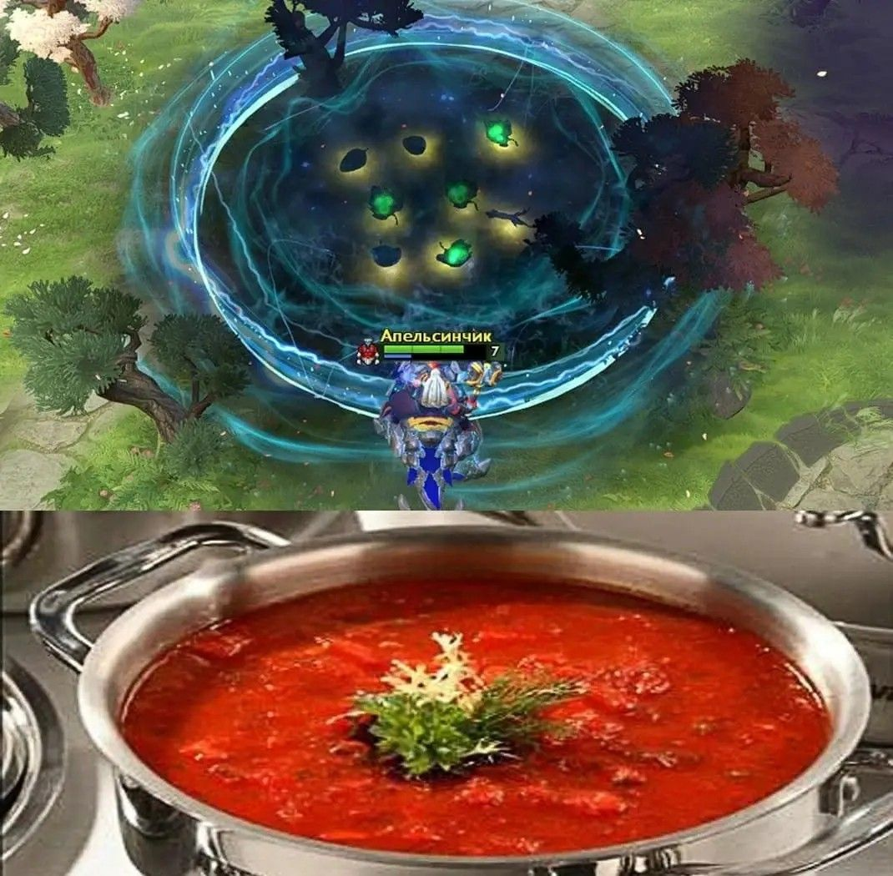
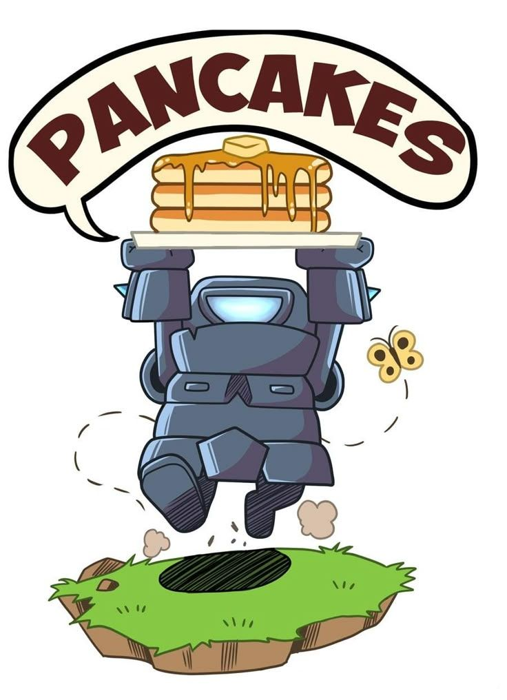
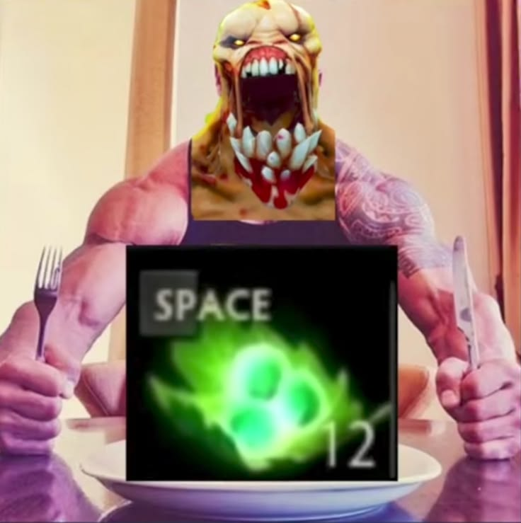

Борщ мамкин
Наваристый, тёмно-бордовый. Секрет — тушить свёклу отдельно с уксусом, иначе выцветет.
Читать рецепт →Готовим так, чтобы катку не сливать
Тыкает в случайный рецепт. Для тех, кто 40 минут выбирает, что поесть, и в итоге не ест ничего. Сейчас в базе несколько рецептов.

Наваристый, тёмно-бордовый. Секрет — тушить свёклу отдельно с уксусом, иначе выцветет.
Читать рецепт →
Двенадцать штук — ровно столько, чтобы скормить саппорту и самому не сдохнуть на линии.
Читать рецепт →
Соус из желтков и пармезана, сухарики на оливковом масле. Курицу бери грудку — керри не должны толстеть.
Читать рецепт →Без сливок, как в Риме. Соус — желтки, сыр и вода от пасты. Добавишь сливки — тимтспилл, иди в бот.
Читать рецепт →